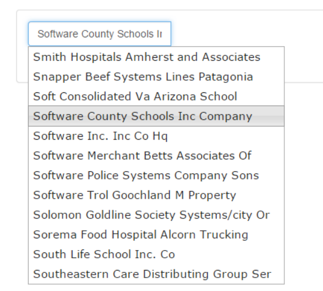

This is a template for a documentation website for a programming framework or library. It includes a template for components description with a navigation list.
Prior to the advent of Ajax, doing look-ups for data entry fields in Web pages was a kludgy, nasty thing. We had to launch a new browser window with JavaScript's klunky Window.Open(), which offered very little in the way of programmatic control (eg, it was quite challenging to position the 'lookup' window correctly.
But along came Ajax and with a little CSS help, we can now do some pretty cool lookups. The downside is that the code required can be quite fiddly and you need to program both the client-side and the server-side. Worry not, Walter's data goodness extends to the Web quite nicely. Another part of Walter, ASNA.Helpers.ASPNET provides a JavaScript interface over Walter's query capabilities as well as the HTTP handler and JavaScript you need to very easily hook up an AutoComplete in your ASP.NET Web apps.
The image below shows the jQuery AutoComplete in action with Walter. The jQuery AutoComplete expects a Json structure with 'label' and 'value' nodes for each entry that matches the search.
The label is the text to display and the value is the associated value to return. For example, when looking up states, the full state name would be the label and the state abbreviation would be the value; or when looking up a customer number the customer name could be the label and the customer number could be the value.
jQuery AutoComplete does all the UI work client side and works with either either HTML elements or ASP.NET controls to define the inputs. The code below shows using ASP.NET controls. In this case, we'll display both values, but in the real world, you'd typically stash the value looked up in a hidden input element.
<asp:TextBox ID="textboxCustomerName" runat="server"
EnableViewState="False" ClientIDMode="Static"></asp:TextBox>
<asp:TextBox ID="textboxCustomerNumber" runat="server"
EnableViewState="False" ClientIDMode="Static"></asp:TextBox>
Given the elements above, the entire JavaScript you need to provide to AutoComplete an input field is shown shown below. Lines 1-11 show Walter's JavaScript query interface and the line 13 is jQuery AutoComplete-specific.
var ACCustomerName = new ASNAHelpers.QueryInputArgs();
ACCustomerName.url = "../services/jsonservice.ashx";
ACCustomerName.Library = "examples";
ACCustomerName.File = "cmastnewl2";
ACCustomerName.FieldsList = "cmname:label,cmcustno:value";
ACCustomerName.Rows = 12;
ACCustomerName.Query = "CMNAME >= '{CMNAME}'";
ACCustomerName.addQueryParm("CMNAME");
ACCustomerName.addOption("labelTargetId", "textboxCustomerName");
ACCustomerName.addOption("labelValueId", "textboxCustomerNumber");
ACCustomerName.addOption("showLabelOnScroll", true);
ASNAHelpers.autoComplete.registerQuery(ACCustomerName);
| Line | Description |
|---|---|
| 01 | Create an instance of ASNAHelpers.QueryInputArgs. This is the JavaScript object that ASNA.Helpers.ASPNET provides to implement the JavaScript interface to Walter's query engine. You need one instance of this object for each input field that needs AutoComplete. Except for minor syntaxes with the way values are added to the QueryParms, OrderBy fields, and query Option collections, the JavaScript required to create a Walter query with JavaScript is nearly the same as it is to create on server side with AVR or C#. |
| 02 | Set the URL of Walter's HTTP Handler ASHX file. By default it's located in the 'services' folder in the Web app's root folder. |
| 03 | Set the library for the Walter query. |
| 04 | Set the file name for the Walter query. |
| 05 | Set the FieldsList for the Walter query. |
| 06 | Set the number of rows for the Walter to return. |
| 07 | Specify the Walter query selection. |
| 08 | Set the query parms for the Walter Query. Walter's AutoComplete expects the first field to be the field for which the value the uses enters to be the lookup value. However, additional query parameters could be provided to further scope the query. |
| 09 | Walter's AutoComplete implementation expects at least one one query helper to be provided. The first, which provides the 'labelTargetId' is the element ID of the input element to which you want to attach a jQuery AutoComplete. |
| 10 | 'labelValueId' provides the element Id into which the selected value should be placed.. |
| 11 | By default, the jQuery AutoComplete wants to display the values as the user scrolls through them. In some cases, though, it might be preferable to show the label as the values are scrolled. Take a look at the AutoComplete it is showing labels, so it has showLabelOnScroll set to 'true'. |
| 13 | Once you've defined the Walter query with JavaScript, line 13 registered that query with the jQuery UI AutoComplete. |
Walter leans on jQuery's AutoComplete to do much of the heavy lifting, but Walter does kick in his own JavaScript for the task. Let's see how easy it is. First, use the Component Installer to ensure you get all the binaries, Javascript and other files you need.